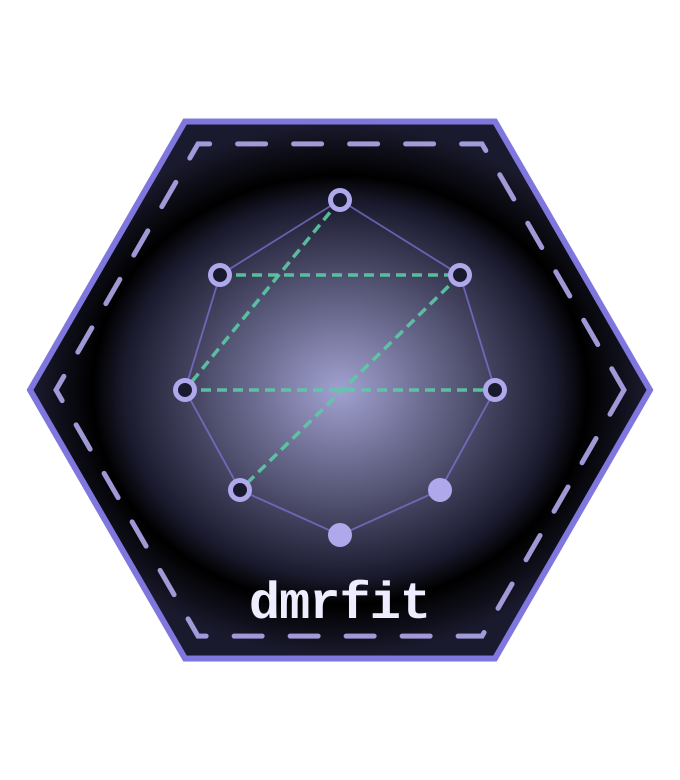

dmrfit
Optimization Tools for Discrete Markov Random Fields
A set of tools designed for estimating discrete Markov Random Fields via pseudolikelihood, for both Ising models (Ising, 1925) and Ordinal Markov Random Fields (Marsman et al., 2025). Parameters are estimated through a trust region optimization algorithm (Fletcher, R., 1987; Nocedal, J. and Wright, S.J., 1999), with robust standard error estimation. The package supports both full network estimation, where all edges are included, and constrained network estimation, where only a specified subset of edges is considered.
Installation
Install the package in R from CRAN:
remotes::install_github("jupepis/dmrfit") # install package via remotes
library(dmrfit) # load the packageAny issues with the package?
Should you encounter errors while using the package, or for reporting any kind of malfunction of the package, you can open an issue in here.
When opening an issue, please, use a descriptive title that clearly states the issue, be as thorough as possible when describing the issue, provide code snippets that can reproduce the issue.
References
- Ising, E. (1925). Beitrag zur theorie des ferromagnetismus. Zeitschrift für Physik, 31(1):253–258.
- Fletcher, R. (1987). Practical Methods of Optimization. 2nd ed. Chichester: Wiley.
- Nocedal, J. and Wright, S.J. (1999). Numerical Optimization. New York: Springer.
- Marsman, M., van den Bergh, D., and Haslbeck, J. M. B. (2025). Bayesian analysis of the ordinal Markov random field. Psychometrika, 90:146–182.